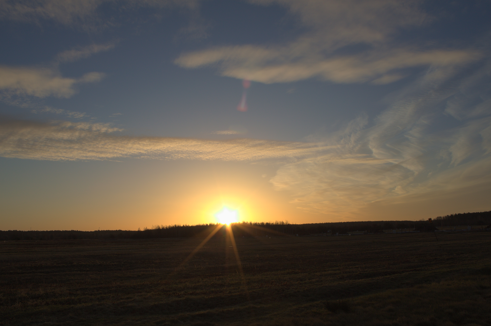

Drugim celem i istotą idei

Warto wiedzieć & warto pamiętać
MIKROKOMPENDIUM
Wiedzy pokoleń
Geneza oraz cel powstania
Odkąd ludzie nauczyli się porozumiewać mową, nie tylko dla wyrażenia podstawowych potrzeb biologicznych, tworzyli pojęcia abstrakcyjne opisujące otaczający ich świat i jego zrozumienie. Tak powstawały pierwsze syntezy tego zrozumienia i funkcjonowania, wyrażane w języku. Każda kultura posiada ich własne bogactwo. Większość z nich ma wartość uniwersalną. Ewolucja świata pojęć trwa do dzisiaj i będzie trwać dalej.
Warto podjąć próbę skatalogowania najważniejszych osiągnięć procesu ewolucji myśli ludzkiej w formie krótkich, lapidarnych, mądrych i racjonalnych myśli, sentencji czy opinii. Upowszechnianie i propagowanie ich ma ogromne znaczenie dla budowy pokojowej wspólnoty ludzkości. Intencją twórców Mikrokompendium jest zainteresowanie i jej współtworzenie przez ludzi młodych – przyjaźnie do świata nastawionych – gotowych przyjąć uniwersalną i fundamentalną zarazem zasadę etyki: Jeśli nie możesz komuś pomóc, to przynajmniej mu nie szkodź, którą przypomniał światu IV Dalajlama.
Drugim celem i istotą idei Mikrokompendium jest synteza wiedzy oraz mądrości ludzkiej tworzonej przez pokolenia czyli w układzie czasowo-pionowym. Dotąd zajmowali się nią wyłącznie profesjonaliści: filozofowie, historycy. Dla zwykłego zjadacza chleba był to teren niezrozumiałej ontologicznej abstrakcji lub wierzeń religijnych.
Synteza wiedzy przyrodniczej miały charakter czasowo-poziomy. Skutkiem tych ostatnich jest rewolucja naukowa, która zaowocowała rozwojem cywilizacji technicznej i technologicznej czyli turbokapitalizmem.
Obecnie jesteśmy na etapie rewolucji cyfrowej, która może naszą kulturę i sposób życia zmienić całkowicie. Jest to dobry moment do głębokiego namysłu, a przynajmniej refleksji, nad celem i sensem naszej na Ziemi obecności. Rozrzucone przez wieki d i a m e n t y ludzkiej myśli i mądrości, mogą pomóc w obróbce trudnych problemów jakie nasza kultura i cywilizacja przez tysiąclecia tworzyła.
Drugim celem i istotą idei
"Wątpię więc myślę, myślę więc jestem"
Kartezjusz
"To czego nie potrafimy nazwać, nie istnieje"
Arystoteles
Współtworzenie
Każdy może zaproponować włączenie odpowiadającego idei Mikrokompendium hasła/tekstu.
W tym celu wpis oraz autora należy przesłać na adres: mikrokompendium@gmail.com
Po weryfikacji merytorycznej, formalnej i prawnej zostanie włączony bezpłatnie do istniejącego już zbioru.
Zbiór News’y musi zawierać wiarygodne źródło informacji. Masz jakieś ciekawe zdjęcie? Prześlij je nam a my je wstawimy!
Kategorie – zbiory
Podręczna skarbnica ludzkiej myśli, jaką Mikrokompendium może się stać, zawiera kategorie, które stanowią zbiory obejmujące myśli oraz życiowe mądrości o podobnym charakterze. Dodano również nowości z zakresu nauki (newsy) oraz syntezy mądrości jakimi są anegdoty i dowcipy.
Proponowane na początek obejmują:
Mądrości życiowe
Sentencje
Myśli różne, opinie
News’y
Anegdoty, dowcipy

Wschód słońca we Wrocławiu
Zapraszamy do mądrej zabawy
oraz koniecznego nad kondycją Homo sapiens namysłu.
oraz koniecznego nad kondycją Homo sapiens namysłu.